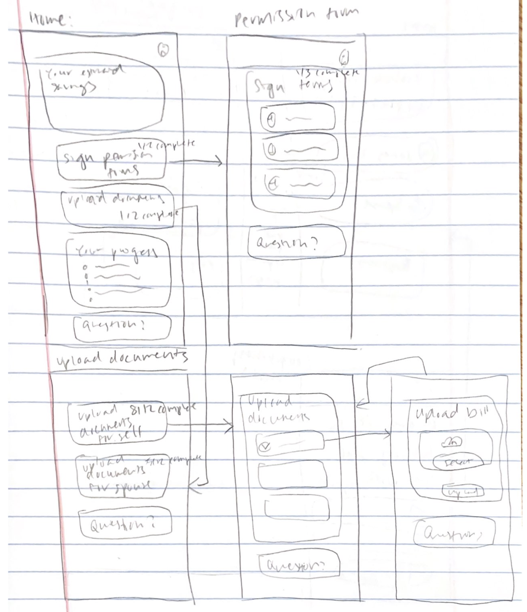
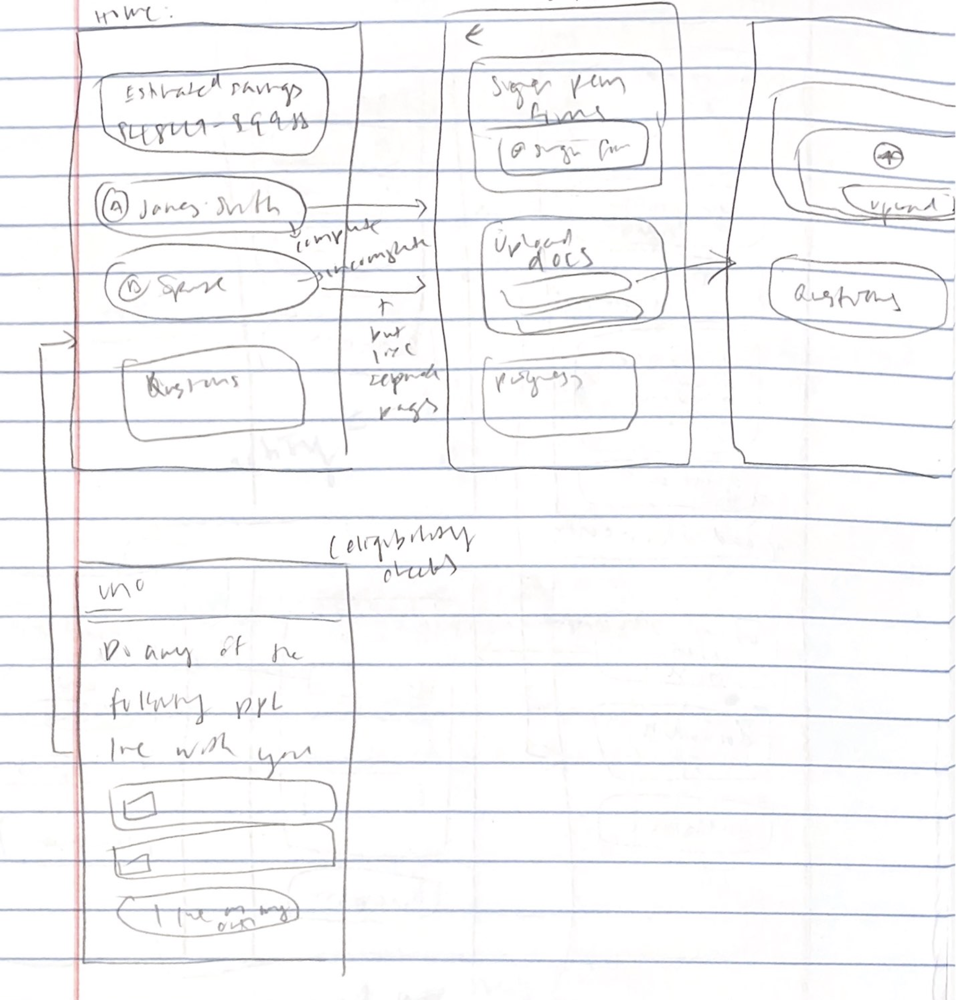
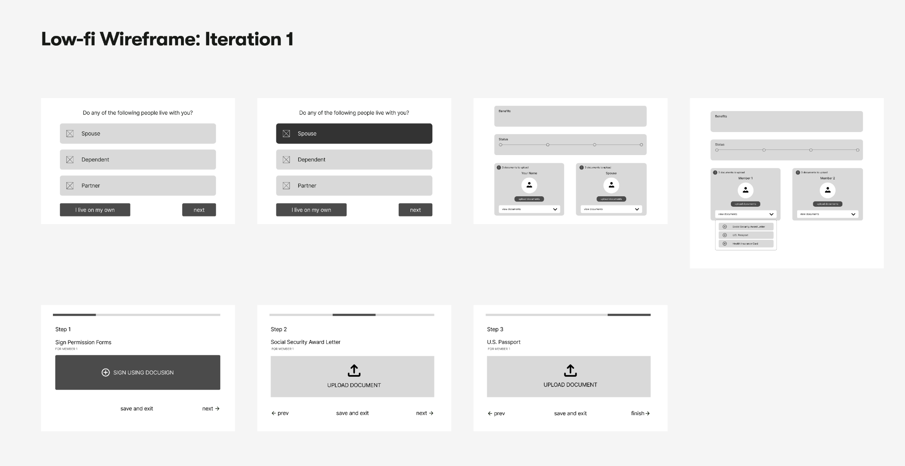
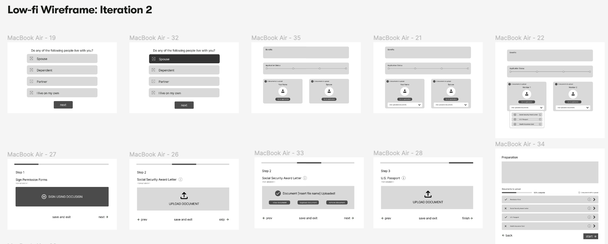
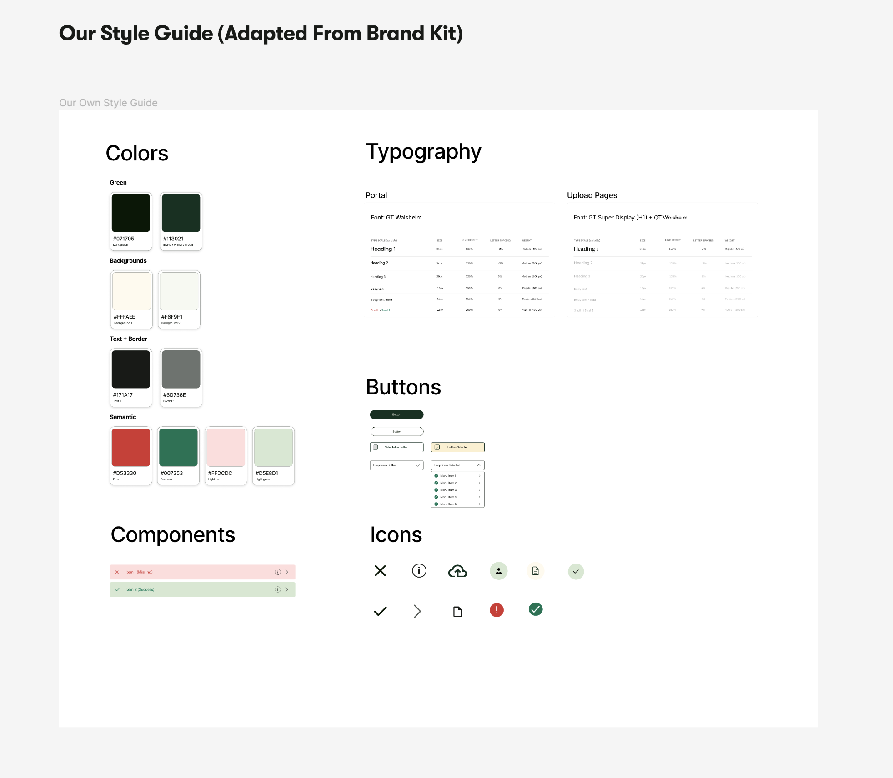
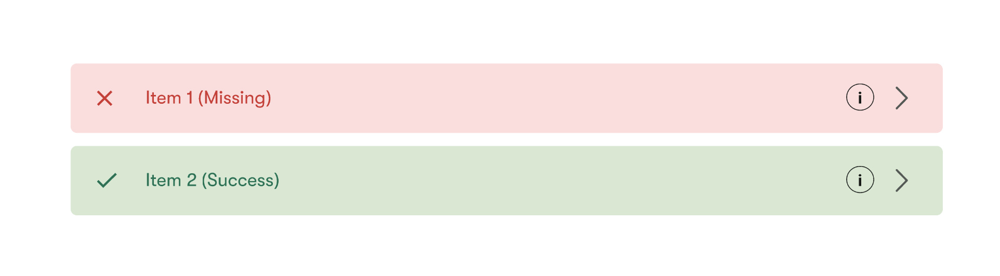
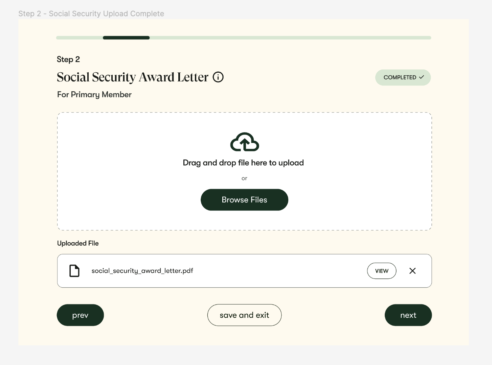

Iterative Design
Introduction and Summary
In this project, we had the opportunity to work with the startup Uno Health that focuses on making it easier for the elderly and others to get government benefits they are entitled to. We worked on redesigning their document upload experience for a household application (e.g., an individual and their spouse), and in the process made improvements to the homepage and eligibility check. Over the course of our redesign, we made sketches, made a lo-fi wireframe, and a hi-fi mockup. Iteration based on critique was a key component of our design process, ultimately allowing us to develop a prototype that best addressed the needs of users.
Understanding the Brief and Sketching
The Problem
As Uno Health's website currently stands, if users were to complete the application process for them and their spouse, there currently exists many duplicate upload sites for the separate persons, which makes the interface slightly overwhelming, so we were tasked to come up with a design that would alleviate this issue.
Allison's Sketches
 David's Sketches
Pauline's Sketches
Sophie's Sketches
First Iteration Wireframing
 Here is the link to our Lo-Fi figma for a closer look.Critique
Shortly after we created the first iteration wireframe, we had a feedback session from other peers in the class, and we also received feedback from Elise, our point of contact. Based on their feedback, it seems that we were able to accomplish our primary goals of eliminating complexity and providing ease of navigation, as they all praised the simplicity of our interface.
Peer Feedback
The largest piece of feedback that we received from our peers was regarding some slight confusion in differentiating interactive elements, specifically the fact that the “I live on my own” button was a completely different color. Another piece of feedback that they gave was that the interface was unclear in conveying behavior in unconventional settings. For example, what if a user hit “save and exit” when no document was uploaded? If “upload document” was clicked again, would this erase all of the documents or keep them (leading users to not act based on fear of wiping progress)? How do you add more documents or delete one document? These were all questions that arose during our critique.
Some additional, more minor peer notes included encouraging adding the ability for users to be able to view what was uploaded so they can double check that they completed the upload correctly and adjusting the overall design to make room for informational headers. A peer also suggested adjusting some of the sizing proportions on our page, specifically pointing us towards the document upload button and suggesting that it be made smaller.
Feedback From Point of Contact
In terms of Elise, our point of contact, she said that we did a great job of hiding complexity, but we had hid it a bit too well. She said that a user may be taken off guard by having to upload a document that they did not come prepared with, so she suggested maybe having a landing page where all of the documents needed in the process were listed so the user could feel prepared. Additionally, she also brought up the idea of handling the edge cases of the document upload process, including skipping during the process when a user may not have a given document at the moment.
Updating Our Wireframe
 Here is the link to our second Lo-Fi figma for a closer look.Our wireframe went through several changes after the critique session, but the largest change was arguably the creation of the landing page (see below) after clicking into “edit documents” (previously “upload documents”, changed to diminish fear of clicking on the button also based on peer feedback). This landing page essentially was a duplicate of the dropdown on the home page in a larger form and included clear labels indicating whether a document has been uploaded. We also added a numerical status bar, an indicator of how many documents were left, and a written description of how to navigate around the page in order to further assist users with the document uploading process.

Another change to the existing wireframe that we made based on peer feedback was to display uploaded documents on the individual document upload pages so that users could delete and add documents. Lastly, as told by at least three individuals during the peer review process, we changed the “I live on my own” button to fit in with the other options, and we also added info buttons to the documents.
We did not take the feedback to add more information to our document headers, as we felt like that would add too much complexity to the cleanliness of the site. We also did not completely adopt the feedback to change the look of the home page upon finishing the upload, but we did add a small icon to signify the completion of a profile.
Lastly, we did not take the feedback on shrinking the size of our upload buttons, since our target audience should be Medicare members 60 years and older.
High Fidelity Prototyping
Style Guide
 See the full style guide in this linkWe were originally given a style guide by our client, which gave us the shades of the background yellow and the dark green components. We believe that they chose these colors to match with the color of their logo, but besides that, the dark green was always used on a button, so the designer probably wanted to choose a color with great contrast to the rest of the scheme (light colors) to signify clickability. Additionally, we think that the typography was chosen because its round font made the page less formal and intimidating (which is the intention of this webpage) while still making it easy to read.
In our high-fidelity prototype, we mostly stuck to the color scheme and fonts given by the client, since the colors fit within the scheme of their webpage and were well-chosen for accessibility. However, there were several color schemes up for debate as well.
For example, our group had a small debate about the red color used to signify incompletion in our prototype. We were provided with a red color by the client’s style guide, but when put in contrast with the yellow-white background, the red looked a bit more like an orange and did not have as much of a “warning” feeling. Therefore, we used a redder color for the incomplete documents.
Our group also talked about the colors of the labels and arrows of the preparation page. We made them different colors (the label was a darker shade of red or green, and the info button and arrow button was black) to signify the difference in clickability. Since the free version of Figma does not allow hover effects, this was our way of signifying clickability.
Prototype
 See the full Hi-Fi prototype in this linkStructure-wise, our final Hi-Fi design was centered around the same principles as our Lo-Fi wireframe: spreading out the downloading process into multiple pages and creating multiple ways of interacting with the upload flow. We paid specific attention to making sure that users knew instinctively what to click on by highlighting specific buttons in dark green (moving on to the next document, starting the upload process, etc.) and changing the wording of some buttons as well (“go to application” instead of “upload documents”).
Lastly, we also made sure that users had a way of retracting on actions if they accidentally clicked something or were not prepared (for example, we give the option to remove documents with a simple click of the x button, the ability to skip certain documents, and also the ability to save and exit halfway through the process).
Final Founder Feedback
Conclusion and Reflections
A key way in which we improved our soft skills relating to design was in
our experience working as a team throughout the design process. This
gave us a chance to deal with disagreements that come up and to work
through design problems more explicitly, since we all had to be on the
same page about everything. Over the course of this project, we
developed a true understanding of the idea that “the first design is
never the best one.” Iteration based not only on our own cognitive
walkthroughs but also on direct feedback from others is critical, and
the integration of that feedback is perhaps even more important than
developing the initial design starting point.
On the more technical side of things, we significantly improved our
skills in Figma, including developing working prototypes that one can
click through. We also got experience using Loom and had practice in
making short videos that were able to concisely and clearly display our
work. All in all, we had a great experience working on this project
together, and look forward to continuing to develop our skills in future
endeavors.